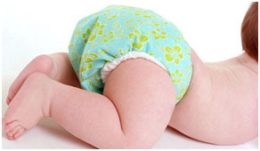
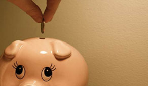

Tã vải Anvi Baby mềm mại thoáng mát rất tốt cho làn da nhạy cảm của em bé và hoàn toàn không chứa các chất hoá học độc hại như tã giấy. Sự kết hợp tuyệt vời giữa các chất liệu cotton (sợi tự nhiên), bamboo charcoal (sợi than tre hoạt tính), microfiber (sợi tổng hợp siêu nhỏ), suede cloth (sợi mát thấm 1 chiều), giúp không bị ướt ra bên ngoài, không bị thấm ngược giữ cho da bé khô ráo.
Thiết kế tã vải AnVi Baby đàn hồi, co dãn giúp vừa khít với bắp chân của em bé, có nhiều nút bấm để thay đổi độ rộng phù hợp với sự lớn lên từng ngày của bé, bé có thể chơi đùa năng động hay ngủ ngon suốt đêm mà mẹ không lo ngại gì cả.

Tã vải hiện đại giúp tiết kiệm tối đa túi tiền cho mẹ. Thực vậy: Một ngày mẹ sẽ phải sử dụng tối thiểu 3 tã giấy để đảm bảo đủ cho bé, trung bình 1 ngày mẹ phải tiêu tốn : 3 x 5.000đ = 15.000đ
Trong vòng 3 năm số tiền sử dụng cho tã giấy sẽ là : 15.000đ x 3 x 365 ngày = 16.425.000đ.
Tuy nhiên với tã vải hiện đại AnVi Baby có thể tái sử dụng trong vòng 3 năm, nên mẹ chỉ cần mua cho bé khoảng 10 bộ tã và chi phí chỉ vào khoảng hơn 1 triệu đồng. Tã vải hiện đại không chỉ tiết kệm cho mẹ mà còn bảo vệ môi trường cho hành tinh của chúng ta, giảm một lượng lớn rác thải ra môi trường. Thật là sự lựa chọn tuyệt vời phải không mẹ?!!